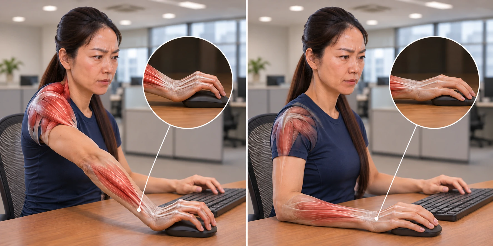

STEP 1・首次加贈・價值 NT$699
先看見，
先看見，
才知道要調哪裡。
一到教室，老師會先用 AI 姿勢分析協助拍攝，呈現你的肩線、頭部前傾、脊椎與骨盆角度，接著當場為你解讀。不是機器丟一個分數就結束——是老師把畫面翻譯成你聽得懂的話。

高雄左營 · 一對一瑜珈調整
把最困擾妳的那個動作帶來。老師會看妳平常怎麼做，陪妳一次試一個調整。下次坐回電腦前或回到球場，妳會知道可以先試什麼，也知道要留意什麼差別。
首次一對一體驗 NT$1,500
50 分鐘個別帶練＋10 分鐘放鬆，加贈價值 NT$699 的 AI 體態檢測。每人限一次。
為什麼先檢測？ AI 體態檢測先提供站姿線索，例如肩線和頭部位置。老師再看妳做一次平常最費力的動作，把兩個畫面一起看，決定這堂課先試哪個調整、從哪個動作練起。
為什麼過幾天又緊回來？
久坐時，頭往前伸或肩膀一直抬著，可能讓肩頸多出一份力。我們會從你常做的動作，和你一起看是哪個位置先開始代償。
先用 AI 看姿勢角度，再由老師陪你對照動作裡的用力方式。
一到教室，老師會先用 AI 姿勢分析協助拍攝，呈現你的肩線、頭部前傾、脊椎與骨盆角度，接著當場為你解讀。不是機器丟一個分數就結束——是老師把畫面翻譯成你聽得懂的話。
老師會參考檢測畫面和你當下做動作的方式，選出適合你練習的範圍。
你可能只感覺「就是緊」。老師會用50 分鐘一對一瑜伽調整和你對照不同姿勢的出力感。
STEP 3・10 分鐘深層筋膜放鬆
練習後由老師安排放鬆，再整理一個回家可練的用力提示。
一對一帶練 · 教學情境示意
老師只把滑鼠移近，再請妳伸手一次，比較肩膀從哪一刻開始費力。
老師請妳照平常的樣子，從鍵盤伸手去拿滑鼠。她會問：「手還沒碰到滑鼠就費力，還是用了一會兒才有感？」

如果兩次差不多，老師可以先把滑鼠放回去，再試著給前臂一點支撐，一次比較一個變化。
我也有一個動作想請老師看 ↓羽球 · 一對一學員案例
老師依他當次最在意的困擾，調整那堂課的練習。
如果你想先了解肩線、頭部與骨盆的位置，可從 AI 體態檢測開始。想讓老師現場觀察用力方式、陪你試動作，可以選一對一。若目前只想放鬆，按摩也是一種選擇。
👆 手機版可左右滑動
| 比較項目 | 一般按摩放鬆 | 首次 NT$299 AI 體態檢測 | 首次 NT$1,500 一對一肩頸調整 |
|---|---|---|---|
| 單次時間與費用 | 依店家與方案而異 | 約 20 分鐘，首次 NT$299 | 約 70 分鐘，首次 NT$1,500（含 AI 體態檢測） |
| 觀察代償線索 | 通常以放鬆為主，依服務而異 | 老師解讀姿勢角度，整理可觀察的線索 | 結合姿勢角度與現場動作，觀察不同部位如何分工 |
| 練習日常用力 | 通常不含動作指導 | 以評估與方向建議為主 | 老師一對一帶練，提供回家可試的用力提示 |
| 適合誰 | 當下想放鬆的人 | 想先看懂姿勢狀態、再決定怎麼練的人 | 肩頸常覺得緊、想有人就自己的動作給回饋的人 |
做過檢測與調整的人，在公開評論裡這樣說——
首次一對一體驗 NT$1,500 · 加贈價值 NT$699 的 AI 體態檢測 · 約 70 分鐘 · 每人限一次
下列三項都可選填，也可以直接開 LINE 詢問。
用 LINE 詢問可約時段開啟 LINE 後請送出訊息，時段以館方回覆為準。
老師您好，我想詢問一對一肩頸調整首次體驗 NT$1,500（含 AI 體態檢測）的可約時段。（來源代碼：#neck-release）
AI 體態檢測為運動功能性姿勢評估，非醫學診斷，數值反映姿勢習慣，不代表任何疾病診斷。本服務為運動放鬆與姿勢調整，非醫療行為，不做疾病治療或診斷，亦不保證任何效果。如有慢性疼痛、發炎或舊傷，請先諮詢合格醫療專業人員。